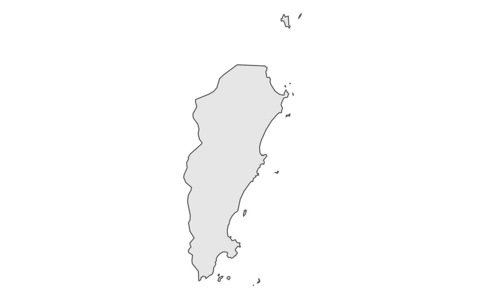
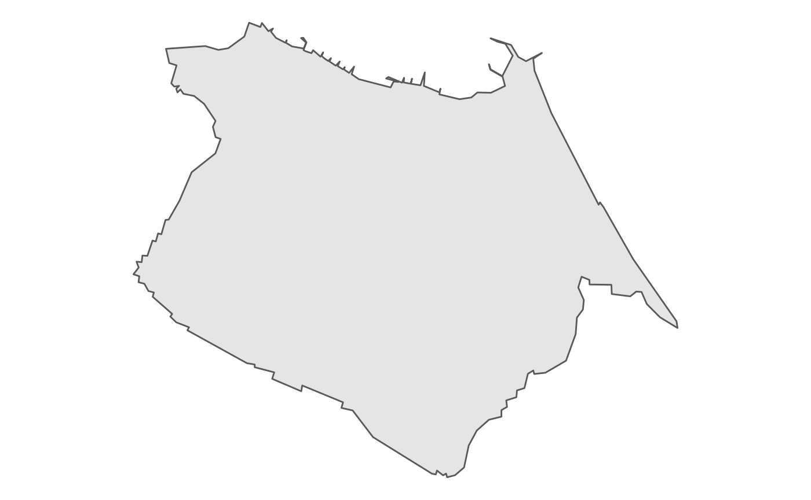

Tutorial.RmdEsta vinheta descreve as funcionalidades básicas do pacote e mostra como ele pode ser usado para georreferenciar seus dados.
O pacote permite que você georrefenrencie seus dados com:
av <- get_addr("Avenida pequeno príncipe")
av
#> # A tibble: 1 x 2
#> lon lat
#> <dbl> <dbl>
#> 1 -48.5 -27.7
# CEP da avenida pequeno principe
get_addr("88063-000")
#> # A tibble: 1 x 2
#> lon lat
#> <dbl> <dbl>
#> 1 -48.5 -27.7Carregando funções de utilidade para ler e manipular dados
Também é possível identificar o município e o setor censitário de um endereço:
mun <- geobr::read_municipality(year = 2018) %>%
rename(geometry = geom)
geo_av <- geopart(av, mun)
ggplot(geo_av) +
geom_sf() +
theme_void()
geo_cast <- get_addr("Estádio Arena Castelão") %>%
geopart(mun)
ggplot(geo_cast) +
geom_sf() +
theme_void()
Para a identificação do setor censitário também é possível usar a mesma função. Para tanto deve-se usar como segundo argumento os polígonos dos setores censitários. Uma forma fácil de acessar esses polígonos é usando o pacote geobr: geobr::read_census_tract.
setores <- geobr::read_census_tract(3550308) %>%
rename(geometry = geom)Com estes polígonos em maos é possível identificara o setor censitário ao qual determinado endereço pertence.
epm <- get_addr("Rua botucatu, 740")
geo_epm <- geopart(epm, setores)
ggplot(geo_epm) +
geom_sf() +
theme_void()Outra funcionalidade do pacote permite relacionar endereços distintos
pacientes <- tibble(
paciente = LETTERS[1:3],
endereco = c(
"Av. Dr. Altino Arantes, 941",
"Rua Gandavo, 349, São Paulo",
"Rua Bela cruz, 40"
)
) %>%
mutate(latlon = map(endereco, get_addr))E agora é possível calcular a distância entre esses pontos e a Escola Paulista de Medicina
pacientes %>%
mutate(distancia_km = map_dbl(latlon, distancia, y = epm))
#> # A tibble: 3 x 4
#> paciente endereco latlon distancia_km
#> <chr> <chr> <list> <dbl>
#> 1 A Av. Dr. Altino Arantes, 941 <tibble [1 x 2]> 0.752
#> 2 B Rua Gandavo, 349, São Paulo <tibble [1 x 2]> 0.824
#> 3 C Rua Bela cruz, 40 <tibble [1 x 2]> 6.82Há um conjunto de funções que permite identificar, por exemplo, o local mais adequado para tratar determinado paciente. min_dist retorna a menor distância.
paciente_C <- pacientes$latlon[[3]]
hospitais <- map_df(c("Hospital São Paulo",
"Hospital Dom Alvarenga",
"Hospital Paulistano"),
get_addr)
min_dist(paciente_C, hospitais)
#> [1] 3.570029
distancia(paciente_C, hospitais)
#> [,1] [,2] [,3]
#> [1,] 6.809528 3.570029 6.432571Enquanto nearplace retorna o local mais próximo